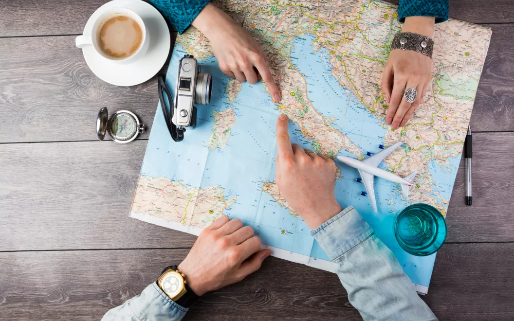
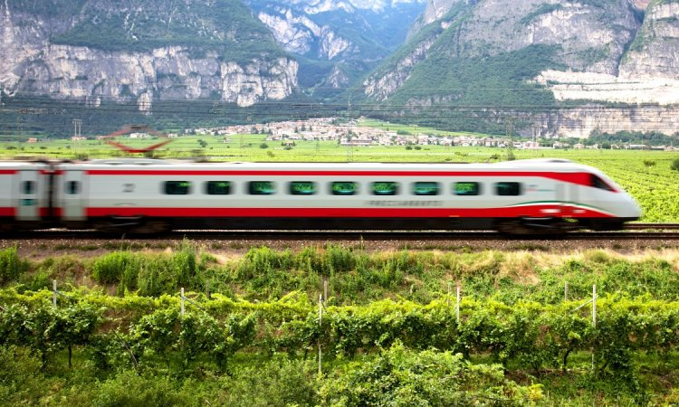
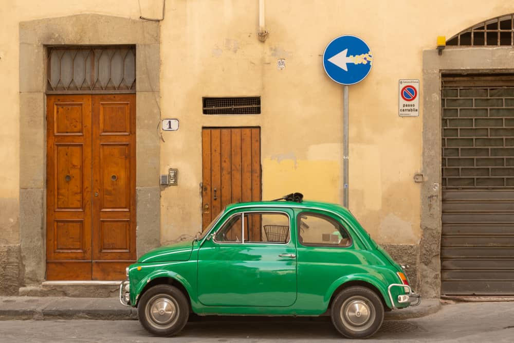

How to travel to Italy:
You can travel to Italy by various means of transport: depending on your needs or the route you want to take, you can choose the most suitable for you.

By plane:
Around 40 airports throughout Italy offer a tight network of domestic, international and intercontinental flight connections.

Travelling to Italy by train:
The extensive and comprehensive European railway network that connects Italian cities to other capital cities makes it possible to travel directly to an Italian city centre.

Travelling to Italy by car:
The extensive European motorway network and several passes all along the Alps make it easy to travel to Italy by car or motorbike: you can travel from Austria, France, Switzerland or Slovenia.